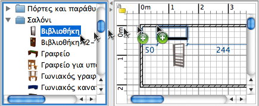

| Προσθήκη πορτών, παραθύρων και επίπλων | |||
Για να προσθέσετε πόρτες, παράθυρα ή έπιπλα στην οικία σας, σύρετε και αφήστε ένα ή περισσότερα έπιπλα από τον κατάλογο στο σχέδιο της οικίας ή στη λίστα επίπλων.  Μπορείτε επίσης να επιλέξετε ορισμένα έπιπλα από τον κατάλογο και στη συνέχεια να επιλέξετε Έπιπλα > Προσθήκη στην οικία ή να κάνετε κλικ στο εργαλείο Προσθήκη στην οικία.
Όταν τα έπιπλα σύρονται και αφήνονται στη λίστα επίπλων ή όταν προστίθενται μέσω του μενού Έπιπλα > Προσθήκη στην οικία, η πάνω αριστερή γωνία τους βρίσκεται στο σημείο (0, 0). Τα αντικείμενα που προστίθενται στην οικία επιλέγονται και σύρονται ταυτόχρονα στη λίστα επίπλων, στο σχέδιο και στην προβολή 3D. Κατά τη διάρκεια φόρτωσης του μοντέλου 3D των προστιθέμενων αντικειμένων, αυτά τα αντικείμενα εμφανίζονται ως λευκά κουτιά στην προβολή 3D. |
|